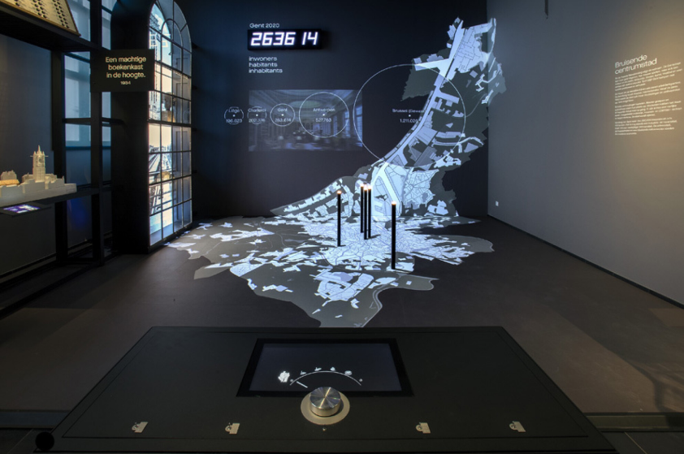

Het STAM is het Gentse stadsmuseum dat het verhaal van Gent brengt en je (nog) warm(er) maakt voor de stad. Je ontdekt er de vele lagen van Gent, een hedendaagse stad met een eeuwenoude geschiedenis.
De vaste tentoonstelling 'Het verhaal van Gent' vertrekt bij een enorme luchtfoto van Gent van vandaag en neemt je mee langs een chronologisch parcours van objecten en multimedia. Je voelt de ontwikkeling en groei van Gent. Passeert de revue: alles wat Gent tot Gent maakt en wat Gent tot een stad maakt.
Maar het STAM gaat breder dan Gent alleen en vraagt zich ook af wat een stad tot een stad maakt. Die vraag zit vervat in 'Het verhaal van Gent', in projecten zoals De vierkante kilometer en in onze tijdelijke tentoonstellingen.
Wat het STAM anders maakt, is dat het echte topstuk zich niet tussen de muren van het museum bevindt. Dat topstuk is Gent zelf en een bezoek aan het Stadsmuseum is niet volledig zonder een bezoek aan de stad.
Het STAM verkent als museum wat Gent tot Gent maakt, en de stad tot stad. We verbinden mensen van vandaag met de geschiedenis en kijken naar de toekomst van de stad. Vanuit het STAM betrekken we bewoners, bezoekers en fans van de stad en gaan we gul partnerschappen aan.
Sla de strategische en operationele doelstellingen van het STAM erop na, in de samenvatting van ons beleidsplan 2024-2028.
Voor iedereen die Gent (beter) wil leren kennen…

In 2012 kreeg het STAM van de Vlaamse overheid het kwaliteitslabel waardoor het zich een erkende collectiebeherende cultureel-erfgoedorganisatie mag noemen.